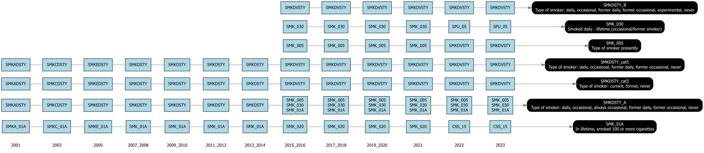
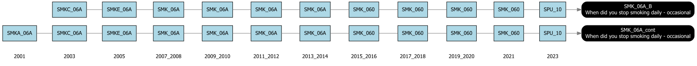
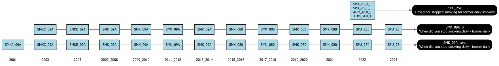
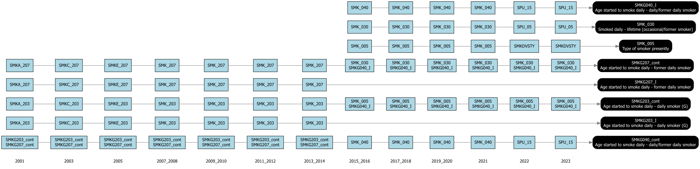

| Derived variable | Label | Min | Max | cchsflow range |
| DHH_AGE | Age | 12 | 126 | [12,102] |
| SMKG01C_A | Age smoked first cigarette | 0 | 88 | [5,80] |
| SMKG040 | Age started to smoke daily - daily/former daily smoker | 4 | 84 | [5,80] |
| SMKG06C | Years since stopped smoking daily - never daily | 3 | 84 | [3,82] |
| SMKG203_A | Age started to smoke daily - daily smoker (G) | 5 | 87 | [5,84] |
| SMKG207_A | Age started to smoke daily - former daily smoker | 5 | 83 | [5,80] |
| WTS_M | Weights | 1 | 31683 | [1.07,71 809.93] |
Canadian smoking history generator project
1 cchsflow-temp (branch: SmkGen_Project)
1.1 Files updated and folder added
- A typo on a label was corrected on label-utils.R file
- An extra parenthesis was removed from bmi.R file on line 679.
- The smoking.R file was modified:
- Function if_else2 was replaced by ifelse function to test out the code flow diagram script
- Added six new functions: SPU25_fun, SMK09AI_fun, SMK09AB_fun, SMK09C_fun, SMKG203I_fun, and SMKG207I_fun.
- A folder called extra was created to include the branch notes, the timeline diagram builder function, .png. files, and the variables.xlsx that includes a short list of variables to be used in this project.
1.2 Decisions and assumptions
New variables have been created to maintain the continuous structure present in the CCHS master cycles, or to fill in missing information in specific cycles, or to have the same province/territory groups used in OncoSim. The derived variable names are distinguished by the presence of the letter “_I” at the end.
It is recommended that the current ranges in the variable_details file be used to create the derived variables as a temporary solution at this point. We need to look more closely at the minimum and maximum values that were found in some of the variables from the master cycles.
Use all the cycles, even if the Territories aren’t included in the last three.
The smoking status derived variables were predominantly completed using the variable SMKDVSTY for the most recent two cycles (2022 and 2023). Following a comparative analysis of the frequencies across cycles, a decision was reached to harmonize cycles 2022 and 2023 under the assumption that the category 5 (experimental smoker [at least 1 cig, non-smoker now]) is equivalent to the category 5 (experimental smoker (>1 cig, <100 cig)) utilized in previous cycles.

- The variables employed for the harmonization of data from cycle 2015–2016 to 2021 regarding the inquiry “When did you stop smoking daily - occasional?” have been modified. The variable designated as SMK_060 is now utilized for this purpose instead of SMK_100.

- Due to the alterations in the questions in the 2022 cycle regarding the inquiry “When did you stop smoking daily—former daily?” the harmonization demanded a specific computation for this cycle. In a specific instance, the function used assigns the same month of the interview if and only if SPU_25_B_I is not available.

- The derived variable SPU_25I was also used to add the 2022 cycle to the harmonization of the years since stopped smoking daily - former daily (SMKG09C).
- The age at which people start smoking daily also required some changes. Please check the variable_details file for more information.

1.3 Notes
- In the label-utils.R file, line 168 looks strange.
- “ICES Confirmation” column from variables .xlsx file was not updated.
- I found discrepancies in the databaseStart column of the latest version of the main branch variable_details file for DHH_AGE. I decided to copy the first row and add the new cycles.
1.4 Pending tasks
- Check the warning message about the use of external vector in selections that was deprecated in tidyselect 1.1.0. All we have to do is use “all_of()” or “any_of()”.
- Check if it is possible to integrate the Territories information from cycle 2022.